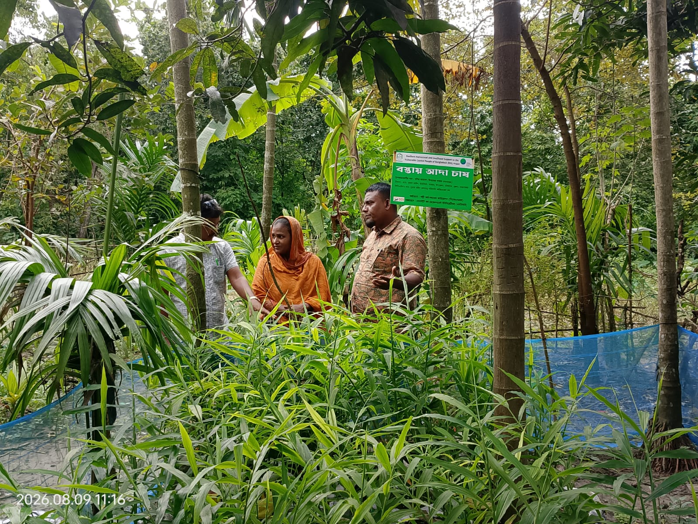

Success Stories & Case Studies
Documenting how project support is changing households and communities.

Climate-adaptive homestead cultivation
Field documentation can be used to develop beneficiary stories, evidence and lessons learned.
Building climate-adaptive capacity and strengthening resilient livelihoods among vulnerable coastal communities.
Explore Our WorkDocumentation ManagementThe RHL Project works to reduce wealth risks among vulnerable coastal communities and strengthen their capacity to adapt to climate-related challenges.
Through resilient housing, diversified livelihoods, climate-adaptive agriculture, crab-related livelihoods and tree plantation, the project supports practical solutions at household and community level.

Practical approaches supporting resilient coastal livelihoods and environmental adaptation.
Supporting households with climate-adaptive homestead solutions.
Improved goat-rearing facilities for resilient livelihoods.
Livelihood diversification through crab-related activities.
Homestead cultivation adapted to coastal conditions.
Strengthening environmental resilience.
Project monitoring and documentation.
Documenting how project support is changing households and communities.

Field documentation can be used to develop beneficiary stories, evidence and lessons learned.
Enter, manage, search and export RHL project documentation without leaving this website.
RHL Project | Resilient and Livelihood Support to the Vulnerable Coastal People of Bangladesh